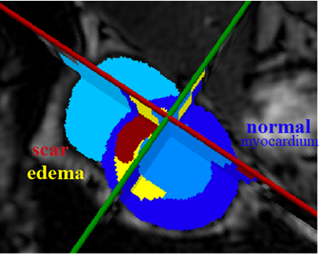

Projects/ code/ data |
| NEW!!! |
★ L Li, V.A Zimmer, J.A Schnabel, X Zhuang. AtrialJSQnet: A New Framework for Joint Segmentation and Quantification of Left Atrium and Scars Incorporating Spatial and Shape Information. Medical Image Analysis 2021. link
code ★ F Wu & X Zhuang. Unsupervised Domain Adaptation with Variational Approximation for Cardiac Segmentation. IEEE TMI 2021. code&data ★ C Pei, F Wu, L Huang, X Zhuang. Disentangle domain features for cross-modality cardiac image segmentation. Medical Image Analysis 2021 code ★ F Wu & X Zhuang. CF Distance: A new domain discrepancy metric and application to explicit domain adaptation for cross-modality cardiac image segmentation. IEEE TMI 2020. code and data (2D WHS) ★ S Gao & X Zhuang. Rank-One Network: An Effective Framework for Image Restoration. IEEE T PAMI 2020 code ★ Xiahai Zhuang: Multivariate mixture model for myocardial segmentation combining multi-source images. IEEE T PAMI 41 (12), 2933-2946, 2019. code note&demo |
| Multi-modality and combined computing |
We investigate algorithms for multi-modality image analysis, particularly for combined computing: ★ X Luo & X Zhuang. MvMM-RegNet: A new image registration framework based on multivariate mixture model and neural network estimation. In Proc. MICCAI 2020. code ★ Xiahai Zhuang: Multivariate mixture model for myocardial segmentation combining multi-source images. IEEE T PAMI 41 (12), 2933-2946, 2019. code note&demo Others: ★ W Ding, L Li, X Zhuang* & L Huang*: Cross-Modality Multi-Atlas Segmentation Using Deep Neural Networks. MICCAI pp 233-242, 2020 code ★ Y Huang, J Xu, Y Zhou, T Tong, X Zhuang. Diagnosis of Alzheimer’s Disease via Multi-Modality 3D Convolutional Neural Network. Frontiers in Neuroscience 2019. code |
| Cross-modality (domain) |
We investigate domain adpatation and domain generalization, particularly for cross-modality image segmentation: ★ C Pei, F Wu, L Huang, X Zhuang. Disentangle domain features for cross-modality cardiac image segmentation. Medical Image Analysis 2021 code ★ F Wu & X Zhuang. Unsupervised Domain Adaptation with Variational Approximation for Cardiac Segmentation. IEEE TMI 2021. code&data ★ F Wu & X Zhuang. CF Distance: A new domain discrepancy metric and application to explicit domain adaptation for cross-modality cardiac image segmentation. IEEE TMI 2020. code and data (2D WHS) |
| LA LGE MRI computing |
We investigate the topic of left atrial (LA) LGE MRI computing, particularly for automatic left atrial and atrial scar segementation and quantification: ★ L Li, V.A Zimmer, J.A Schnabel, X Zhuang. AtrialJSQnet: A New Framework for Joint Segmentation and Quantification of Left Atrium and Scars Incorporating Spatial and Shape Information. Medical Image Analysis 2021. link code ★ L Li, F Wu, G Yang, L Xu, T Wong, R Mohiaddin, D Firmin, J Keegan, X Zhuang. Atrial Scar Quantification via Multi-Scale CNN in the Graph-Cuts Framework. Medical Image Analysis 2020. code ★ L Li, V.A Zimmer, J.A Schnabel, X Zhuang. AtrialGeneral: Domain Generalization for Left Atrial Segmentation of Multi-Center LGE MRIs. MICCAI 2021. |
| Single modality image and others |
We investigate single image restoration (super-resolution, denoise and deblur) and reconstruction: ★ S Gao & X Zhuang. Rank-One Network: An Effective Framework for Image Restoration. IEEE T PAMI 2020 code ★ S Gao & X Zhuang. Multi-scale deep neural networks for real image super-resolution. CVPR Workshop 2019. code Others: ★ K Zhang & X Zhuang: CMRadjustNet: Recognition and standardization of cardiac MRI orientation via multi-tasking learning and deep neural networks, MyoPS2020 (a tool for detecting and changing orientation of 2D cardiac bSSFP/LGE/T2 MRI) code ★ Q Yue, X Luo, Q Ye, L, Xu, X Zhuang. Cardiac Segmentation from LGE MRI Using Deep Neural Network Incorporating Shape and Spatial Priors. MICCAI 2019, LNCS 11765, pp. 559-567, 2019. code |
| |
LAScarQS ChallengeWe will provide 200+ subjects, and the target of this challenge is to quantify or segment the myocardial pathology (scars) of left atrial walls from LGE MRI of patients suffering atrial fibrillation. |
|  | MyoPS'20 ChallengeThe challenge provides aligned cardiac T2/bSSFP/LGE MRI, which had been manually segmented the scars, edema, normal myocardium and LV/RV blood pool, from 45 patients. The target is to segment the myocardial pathology combining multi-sequence CMR. Specifically, the myocardium will be classified into normal, infarcted and edema regions, which is important for the diagnosis and treatment management of patients. |
 |
MS-CMRSeg'19 ChallengeWe provide 45 multi-sequence CMR images from patients who underwent cardiomyopathy. Each patient had been scanned using the three CMR sequences, i.e. the LGE, T2 and bSSFP. The task of this challenge is to segment the ventricles and myocardium from LGE CMR, combing with other two sequences (T2 and bSSFP) from same patients, which can be used to assist the LGE CMR segmentation. |
 |
MMWHS ChallengeThe challenge provides 120 multi-modality cardiac images acquired in real clinical environment. It aims at creating an open and fair competition for various research groups to test and validate their methods, particularly for the multi-modality whole heart segmentation. It is not only to benchmark various whole heart segmentation algorithms, but also to cover the topic of general cardiac image segmentation and registration and modeling. |
 |
S/W zxhprojzxhproj is a medical image computing platform, being developed and maintained by Xiahai Zhuang since 2004. Based on it, several image registration and segmentation tools have been developed, such as multivariate mixture model, cardiac segmentation, locally affine registration method (LARM), spatially encoded mutual information (SEMI), as well as other image/vector field processing tools. The tools work with nifty (nii/nii.gz) and gipl short int data formats. |